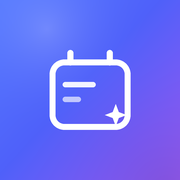

两种方式，任选一种。方式一更像「安装包」，方式二更简单。
下载一个配置描述文件，装完桌面上直接出现 App 图标，点开全屏运行，和下载的 App 手感一样。

不用装任何文件，十秒钟。
iPhone 不允许从网页直接安装 App Store 以外的 .ipa：要么有 Mac + Xcode 自己签名（免费证书 7 天过期），要么买 99 美元/年的开发者账号走 TestFlight。上面两种方式是唯一不需要这些、也不用越狱就能「装到桌面」的路。